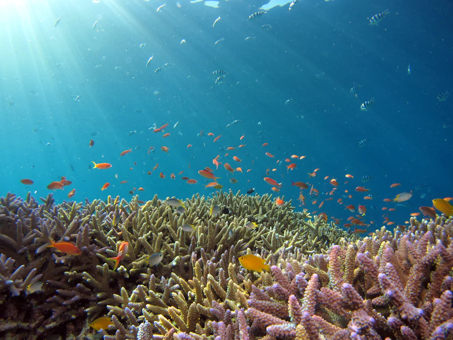
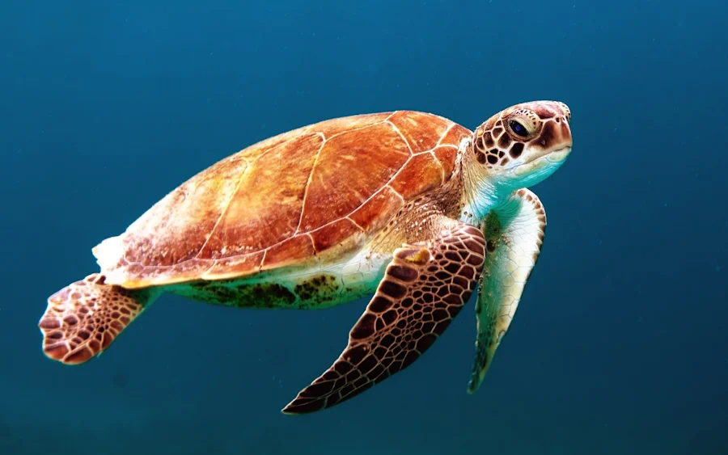

Aguas transparentes todo el año, vida por todas partes y los fondos volcánicos más famosos de Canarias. Salimos en barco cada mañana desde el puerto de La Restinga, en grupos pequeños.
Puntos de inmersión a menos de 15 minutos de barco desde el puerto. Meros confiados, bancos de barracudas, y con suerte, el pez más raro del Atlántico.
La inmersión estrella: una montaña sumergida cubierta de vida donde todo puede aparecer, del mero grande al pelágico de paso.
AvanzadoArcos y túneles de lava con enjambres de castañetas. Luz espectacular a media mañana, perfecta para fotos.
Todos los nivelesFondo tranquilo y protegido, ideal para bautizos y primeras inmersiones. Los meros vienen a saludar sin que los busques.
Iniciación

Todos los precios incluyen barco, guía titulado, botella y plomos. Equipo completo de alquiler por 10 € más.
Snorkel con el barco: 20 €. Acompañantes que no bucean, según plaza disponible. La reserva del Mar de las Calmas exige autorización previa: nosotros la tramitamos por ti, tú solo trae el bañador.
Dinos por WhatsApp qué día quieres bucear, cuántos sois y vuestra titulación (o si es tu primera vez).
Te respondemos con la salida, el punto de encuentro en el puerto y tramitamos el permiso de la reserva.
Briefing con café en el centro, quince minutos de barco y a disfrutar del mar más tranquilo de Canarias.
No somos una fábrica de buceadores. Grupos de seis como mucho, ritmo tranquilo y el mar por delante.
Salidas de barco a las 9:00 y 12:00. El centro abre de 8:30 a 18:00, todos los días de abril a noviembre.
Muelle de La Restinga, s/n
La Restinga · El Pinar de El Hierro
Reservas: +34 634 00 00 47
También atendemos en inglés y alemán.